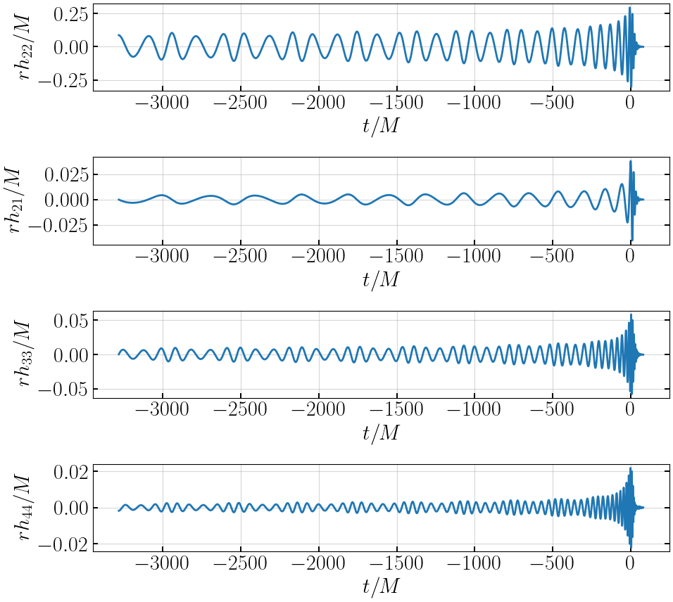
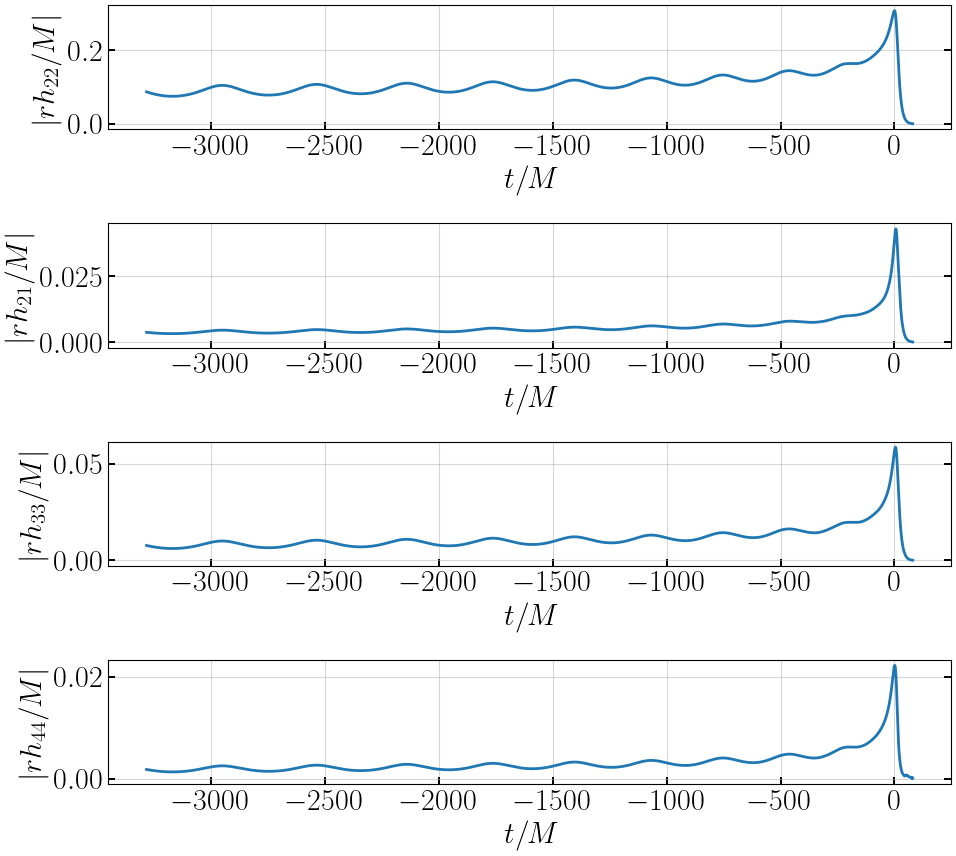
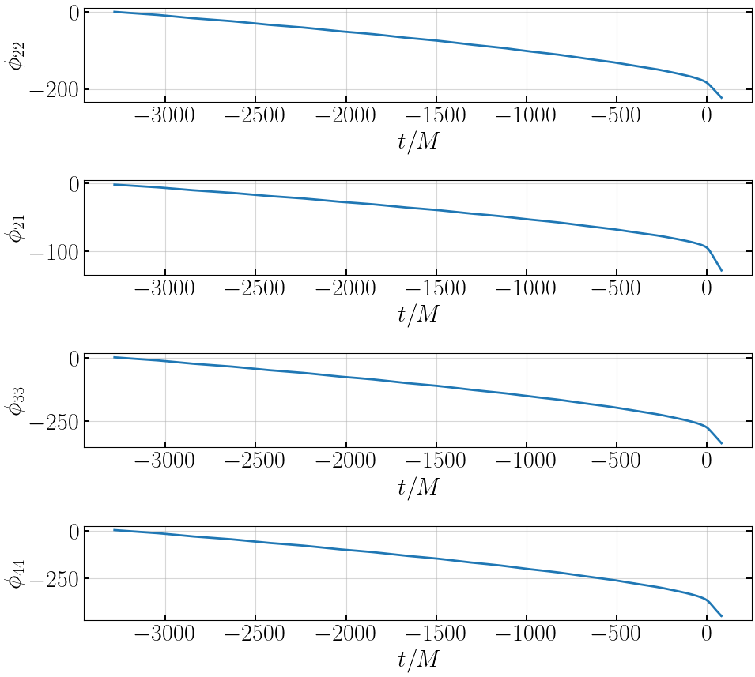

NRHybSur3dq8-gwNRHME model#
NRHybSur3dq8-gwNRHME is a non-spinning eccentric binary black hole merger mulit-modal waveform model. We obtain NRHybSur3dq8-gwNRHME predictions by combining quadrupolar eccentric model EccentricIMR and circular waveform model NRHybSur3dq8 using gwNRHME framework.
NRHybSur3dq8-gwNRHME (multi-modal eccentric nonspinning model) = EccentricIMR (22 mode eccentric nonspinning model) + NRHybSur3dq8 (multi-modal circular nonspinning model) + gwNRHME framework
import warnings
warnings.filterwarnings("ignore", "Wswiglal-redir-stdio")
import matplotlib.pyplot as plt
import numpy as np
import gwtools
# import gwModels
import sys
PATH_TO_GWMODELS = "/home/tousifislam/Documents/works/git_repos/gwModels/"
sys.path.append(PATH_TO_GWMODELS)
import gwModels
lal.MSUN_SI != Msun
__name__ = gwsurrogate.new.spline_evaluation
__package__= gwsurrogate.new
Loaded NRHybSur3dq8 model
Setup your mathematica kernel#
# Set the path to your Wolfram kernel
wolfram_kernel_path = '/home/tousifislam/Documents/Mathematica/ScriptDir/WolframKernel'
# Set the path to the directory containing the EccentricIMR package
package_directory = PATH_TO_GWMODELS + '/externals/EccentricIMR2017/'
Generate waveforms from combined eccentric models#
# Set the binary parameters
params = {"q": 2.6, # mass ratio
"x0": 0.07, # reference initial dimensionless orbital frequency
"e0": 0.1, # initial eccentricity
"l0": 0, # initial mean anomaly
"phi0": 0, # initial reference phase
"t0": 0} # some initial reference time - not much relevant for us
# instantiate the EccentricIMR HM class - it may take some time
# it generate waveforms by combining EccentricIMR and NRHybSur3dq8
wf = gwModels.NRHybSur3dq8_gwNRHME(wolfram_kernel_path, package_directory)
# waveform
tNRE, hNRE = wf.generate_waveform(params)
Times[1.0, 0] is too small to represent as a normalized machine number; precision may be lost.
Times[1.0, 0] is too small to represent as a normalized machine number; precision may be lost.
Times[1.0, 0] is too small to represent as a normalized machine number; precision may be lost.
Further output of MessageName[General, munfl] will be suppressed during this calculation.
Times[1.0, 0] is too small to represent as a normalized machine number; precision may be lost.
Times[1.0, 0] is too small to represent as a normalized machine number; precision may be lost.
Times[1.0, 0] is too small to represent as a normalized machine number; precision may be lost.
Times[1.0, 0] is too small to represent as a normalized machine number; precision may be lost.
Further output of MessageName[General, munfl] will be suppressed during this calculation.
Times[1.0, 0] is too small to represent as a normalized machine number; precision may be lost.
# print available modes
print(hNRE.keys())
dict_keys(['h_l2m2', 'h_l2m1', 'h_l3m2', 'h_l4m4', 'h_l3m3', 'h_l3m1', 'h_l4m3', 'h_l4m2', 'h_l5m5'])
# plot waveform
plt.figure(figsize=(10,9))
plt.subplot(411)
plt.plot(tNRE, hNRE['h_l2m2'], '-', lw=2, label='EccentricIMR')
plt.xlabel('$t/M$')
plt.ylabel('$rh_{22}/M$')
plt.subplot(412)
plt.plot(tNRE, hNRE['h_l2m1'], '-', lw=2, label='EccentricIMR')
plt.xlabel('$t/M$')
plt.ylabel('$rh_{21}/M$')
plt.subplot(413)
plt.plot(tNRE, hNRE['h_l3m3'], '-', lw=2, label='EccentricIMR')
plt.xlabel('$t/M$')
plt.ylabel('$rh_{33}/M$')
plt.subplot(414)
plt.plot(tNRE, hNRE['h_l4m4'], '-', lw=2, label='EccentricIMR')
plt.xlabel('$t/M$')
plt.ylabel('$rh_{44}/M$')
plt.tight_layout()
plt.show()

# plot amplitudes
plt.figure(figsize=(10,9))
plt.subplot(411)
plt.plot(tNRE, abs(hNRE['h_l2m2']), '-', lw=2, label='EccentricIMR')
plt.xlabel('$t/M$')
plt.ylabel('$|rh_{22}/M|$')
plt.subplot(412)
plt.plot(tNRE, abs(hNRE['h_l2m1']), '-', lw=2, label='EccentricIMR')
plt.xlabel('$t/M$')
plt.ylabel('$|rh_{21}/M|$')
plt.subplot(413)
plt.plot(tNRE, abs(hNRE['h_l3m3']), '-', lw=2, label='EccentricIMR')
plt.xlabel('$t/M$')
plt.ylabel('$|rh_{33}/M|$')
plt.subplot(414)
plt.plot(tNRE, abs(hNRE['h_l4m4']), '-', lw=2, label='EccentricIMR')
plt.xlabel('$t/M$')
plt.ylabel('$|rh_{44}/M|$')
plt.tight_layout()
plt.show()

# plot phases
plt.figure(figsize=(10,9))
plt.subplot(411)
plt.plot(tNRE, gwtools.phase(hNRE['h_l2m2']), '-', lw=2, label='EccentricIMR')
plt.xlabel('$t/M$')
plt.ylabel('$\\phi_{22}$')
plt.subplot(412)
plt.plot(tNRE, gwtools.phase(hNRE['h_l2m1']), '-', lw=2, label='EccentricIMR')
plt.xlabel('$t/M$')
plt.ylabel('$\\phi_{21}$')
plt.subplot(413)
plt.plot(tNRE, gwtools.phase(hNRE['h_l3m3']), '-', lw=2, label='EccentricIMR')
plt.xlabel('$t/M$')
plt.ylabel('$\\phi_{33}$')
plt.subplot(414)
plt.plot(tNRE, gwtools.phase(hNRE['h_l4m4']), '-', lw=2, label='EccentricIMR')
plt.xlabel('$t/M$')
plt.ylabel('$\\phi_{44}$')
plt.tight_layout()
plt.show()
